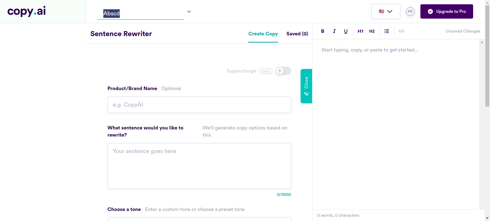
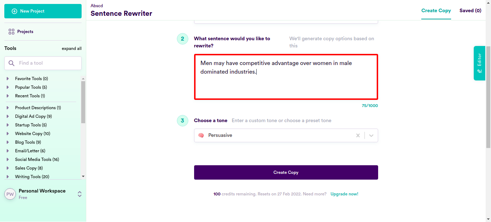
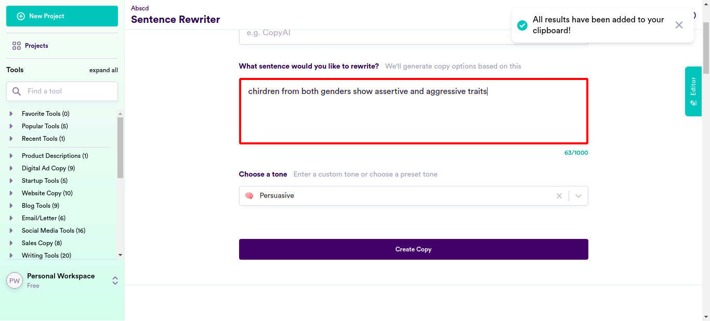
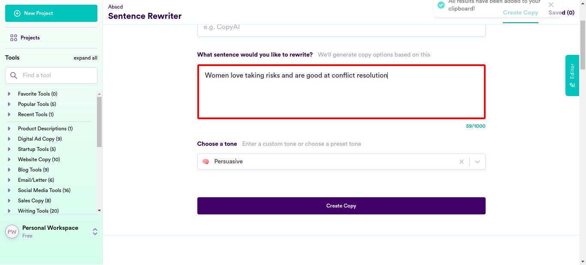
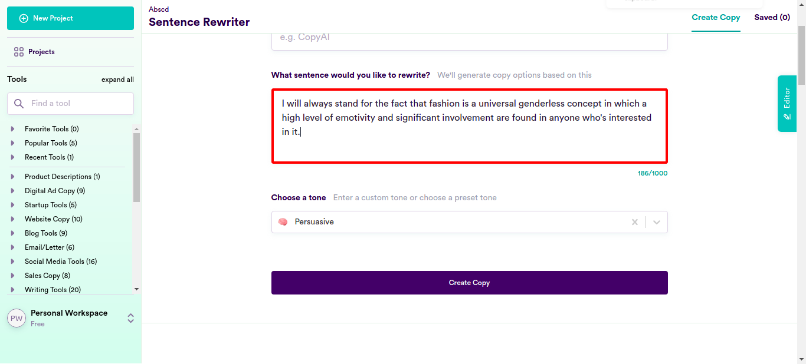
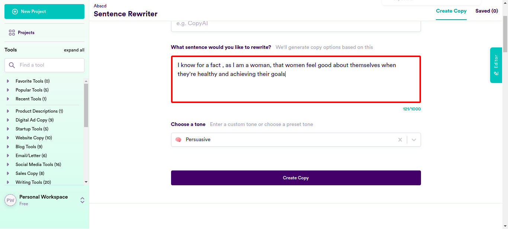
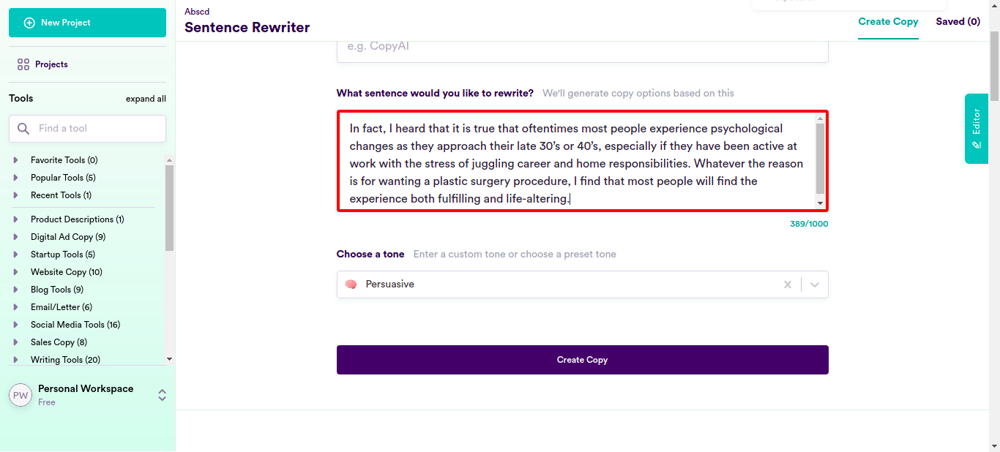
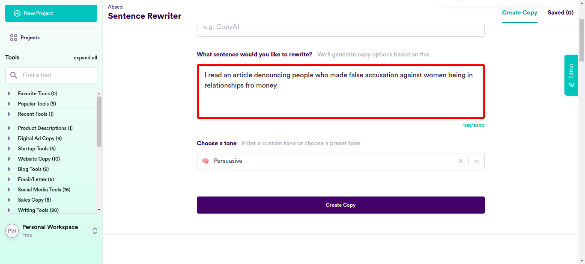
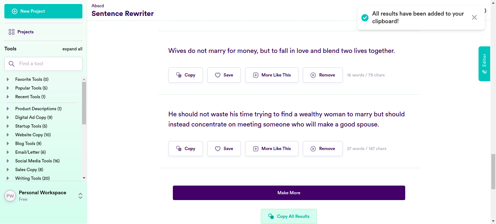

Classes
0 class(es) passed
1 class(es) failed, 0 others
Tests
0 test(s) passed
1 test(s) failed, 0 others
Steps
100 log(s) passed
6 log(s) failed, 1 others
Classes
-
Running on Chrome Jan 27, 2022 18:33:59 failJan 27, 2022 18:33:59 Jan 27, 2022 19:09:33 0h 35m 34s+52ms
-
testJan 27, 2022 18:33:59 0h 35m 34s+41ms fail
-
clickloginJan 27, 2022 18:34:06 0h 35m 26s+882ms fail
Status Timestamp Details check_circle 6:36:14 PM pressKey
TAB key pressed
check_circle 6:36:30 PM enterData
Entered Value "Men may have competitive advantage over women in male dominated industries." in SentenceField
check_circle 6:36:49 PM enterData
Entered Value "Masculinity and femininity should not be used as binaries to divide up all facets of society" in SentenceFieldcheck_circle 6:37:08 PM enterData
Entered Value "Being in control is important to men and women" in SentenceFieldcheck_circle 6:37:28 PM enterData
Entered Value "Dividing men into alpha and beta is pseudo scientific" in SentenceFieldcheck_circle 6:37:47 PM enterData
Entered Value "No one really enjoy surrendering control to anyone." in SentenceFieldcheck_circle 6:38:06 PM enterData
Entered Value "The concept of a strong alpha man is problematic" in SentenceFieldcheck_circle 6:38:26 PM enterData
Entered Value "Women should not be expected to serve men." in SentenceFieldcheck_circle 6:38:46 PM enterData
Entered Value "Women are not biologically programmed to be submissive just like how men are not programmed to be dominant" in SentenceField
check_circle 6:39:05 PM enterData
Entered Value "Women should not be expected to be submissive and men should not be expected to dominate" in SentenceFieldcheck_circle 6:39:25 PM enterData
Entered Value "Obvious differences between men and women is a result of acculturalization" in SentenceFieldcheck_circle 6:39:44 PM enterData
Entered Value "Both men and women have the drive to achieve whatever they want" in SentenceFieldcheck_circle 6:40:04 PM enterData
Entered Value "Patriarchy is why why the majority of CEOs in large companies are men" in SentenceFieldcheck_circle 6:40:23 PM enterData
Entered Value "Traits of domination and submission are unrelated to gender" in SentenceFieldcheck_circle 6:40:42 PM enterData
Entered Value "No one prefers domination or submission because of their gender" in SentenceFieldcheck_circle 6:41:02 PM enterData
Entered Value "There is no such thing as a "dominant gene" or a "submissive gene"" in SentenceFieldcheck_circle 6:41:22 PM enterData
Entered Value "Assertiveness is not an inborn male quality. It is aquired from cultural expectations." in SentenceFieldcheck_circle 6:41:41 PM enterData
Entered Value "chirdren from both genders show assertive and aggressive traits" in SentenceField
check_circle 6:42:00 PM enterData
Entered Value "No sex should be considered dominant or weaker by any culture" in SentenceFieldcheck_circle 6:42:19 PM enterData
Entered Value "Women are not born submissive" in SentenceFieldcheck_circle 6:42:38 PM enterData
Entered Value "People may be attracted to dominant trait" in SentenceFieldcheck_circle 6:42:58 PM enterData
Entered Value "Women love taking risks and are good at conflict resolution" in SentenceField
check_circle 6:43:18 PM enterData
Entered Value "People, both men and women are often affected by Romanticized notions of love" in SentenceFieldcheck_circle 6:43:37 PM enterData
Entered Value "Feminists and women are consumed with causes of equality and justice" in SentenceFieldcheck_circle 6:43:57 PM enterData
Entered Value "People must not be brainwashed into anything they dont want" in SentenceFieldcheck_circle 6:44:16 PM enterData
Entered Value "Women dont expect to be constantly pleased and made happy by men" in SentenceFieldcheck_circle 6:44:35 PM enterData
Entered Value "women are not the weaker or the inferior sex in any field." in SentenceFieldcheck_circle 6:44:55 PM enterData
Entered Value "Women are worthy candidates to invest" in SentenceFieldcheck_circle 6:45:14 PM enterData
Entered Value "Women are not vulnerable to loss aversion. They are as open to taking risks as men" in SentenceField
check_circle 6:45:34 PM enterData
Entered Value "Sexual and reproductive health matters to both the sexes" in SentenceFieldcheck_circle 6:45:53 PM enterData
Entered Value "Women are not the weaker sex" in SentenceFieldcheck_circle 6:46:13 PM enterData
Entered Value "Most women are confident about themselves and their abilities" in SentenceFieldcheck_circle 6:46:32 PM enterData
Entered Value "No one sex is weaker than the other" in SentenceFieldcheck_circle 6:46:51 PM enterData
Entered Value "Women are not weak" in SentenceFieldcheck_circle 6:47:11 PM enterData
Entered Value "People have a lot of room for improvement in certain areas" in SentenceFieldcheck_circle 6:47:31 PM enterData
Entered Value "Both men and women are equally strong and resilient and adept at pushing themselves to their best" in SentenceFieldcheck_circle 6:47:50 PM enterData
Entered Value "Yet another study says that in the case of alcohol both sexes are affected greatly" in SentenceFieldcheck_circle 6:48:10 PM enterData
Entered Value "New research shows no one sex is stronger than the other" in SentenceFieldcheck_circle 6:48:29 PM enterData
Entered Value "Women are smart and capable; so are men" in SentenceFieldcheck_circle 6:48:49 PM enterData
Entered Value "People use skincare to take care of their skin" in SentenceFieldcheck_circle 6:49:08 PM enterData
Entered Value "We shouldn't treat women's body as capital." in SentenceFieldcheck_circle 6:49:27 PM enterData
Entered Value "She isn't a liability for anyone but an asset in combat." in SentenceFieldcheck_circle 6:49:48 PM enterData
Entered Value "We were just talking how combat roles may become more diverse and as safe as it is now, with the addition of ladies." in SentenceFieldcheck_circle 6:50:07 PM enterData
Entered Value "Popular culture always portrays women as equals to men" in SentenceFieldcheck_circle 6:50:27 PM enterData
Entered Value "We've often been told that in the modern age of gender equality, there isn’t a job men can do that women can’t do as well, or even better and that is a fact" in SentenceFieldcheck_circle 6:50:47 PM enterData
Entered Value "Our legal team stands for the notion that pregnancy does not drag a woman's combat abilities or her capabilities down" in SentenceFieldcheck_circle 6:51:07 PM enterData
Entered Value "Yes, I do think that female soldiers along with male soldiers are assets in combat." in SentenceFieldcheck_circle 6:51:34 PM enterData
Entered Value "we think that the presence of females in the army needs to be increased because they fight just as well as their male counterparts and not recruiting them would be a waste of serious potential and talent" in SentenceFieldcheck_circle 6:51:54 PM enterData
Entered Value "I will defend the notion that Women make great soldiers" in SentenceFieldcheck_circle 6:52:14 PM enterData
Entered Value "I told him that women have the same strength and fitness as men and so can carry a machine gun or be a sniper just as easily as men can or be" in SentenceFieldcheck_circle 6:52:35 PM enterData
Entered Value "I will always stand for the fact that fashion is a universal genderless concept in which a high level of emotivity and significant involvement are found in anyone who's interested in it." in SentenceField
check_circle 6:52:55 PM enterData
Entered Value "he was saying that the stereotype of women being the only ones interested in fashion needs to be destroyed" in SentenceFieldcheck_circle 6:53:14 PM enterData
Entered Value "I believe that all humans regardless of gender are instinctive protectors" in SentenceFieldcheck_circle 6:53:34 PM enterData
Entered Value "we were discussing how a person's center of balance depends on their height and not their gender" in SentenceFieldcheck_circle 6:53:54 PM enterData
Entered Value "our community stands for the fact that Gender does not define whether a person is selfish or not." in SentenceFieldcheck_circle 6:54:16 PM enterData
Entered Value "we've noticed that for some reason people seems to be protective by nature of babies" in SentenceFieldcheck_circle 6:54:36 PM enterData
Entered Value "we heard that The paper was condemned from all sides for its ""abhorrent"" and ""callous"" plan." in SentenceFieldcheck_circle 6:54:56 PM enterData
Entered Value "She asserted that women should not have to experience abuse at any point of time in their life" in SentenceFieldcheck_circle 6:55:17 PM enterData
Entered Value "my family strongly believes The stereotype that all women do is spend the family's income and that men are breadwinners is old fashioned and outdated" in SentenceFieldcheck_circle 6:55:37 PM enterData
Entered Value "I read in an article that from toothpaste to toilet paper, radio to the Internet, everyone regardless of age or gender are used to being marketed to." in SentenceFieldcheck_circle 6:55:57 PM enterData
Entered Value "we've seen that not all homemakers are women and not all breadwinners are men." in SentenceField
check_circle 6:56:17 PM enterData
Entered Value "you said that all men and women are equal in the digital world" in SentenceFieldcheck_circle 6:56:38 PM enterData
Entered Value "you read the article which proved that People with female names were far more likely to see ads for products catering for women - 58% of adverts targeting women used female gender markers compared to just 15% of people with male names." in SentenceFieldcheck_circle 6:56:58 PM enterData
Entered Value "i feel that if women are okay with changing their bodies they should'nt be questioned or hated on for it" in SentenceField
check_circle 6:57:18 PM enterData
Entered Value "he proudly women do not have to change the way they look to suit the standards of others" in SentenceFieldcheck_circle 6:57:39 PM enterData
Entered Value "I know for a fact , as I am a woman, that women feel good about themselves when they're healthy and achieving their goals" in SentenceField
check_circle 6:57:59 PM enterData
Entered Value "I honestly don't think there's anything wrong with someone doing plastic surgery as long as they're okay with it" in SentenceFieldcheck_circle 6:58:20 PM enterData
Entered Value "Our high court rules that plastic surgery shouldn't be frowned upon as it is completely legal and women choosing to do it should not have to feel bad about themselves" in SentenceFieldcheck_circle 6:58:41 PM enterData
Entered Value "I really don't understand the fuss over women getting plastic surgery, if the woman wholly wants plastic surgery she shouldn't have to be ashamed of her choice, she is free to do what she pleases" in SentenceFieldcheck_circle 6:59:01 PM enterData
Entered Value "I don't uunderstand why everyone keeps talking about people's plastic surgery, it's their body and their choices" in SentenceFieldcheck_circle 6:59:21 PM enterData
Entered Value "I think that the men and women who want to have fuller lips often opt for the expensive option of lip fillers" in SentenceFieldcheck_circle 6:59:41 PM enterData
Entered Value "If you look around, everyone's always trying to fix whatever flaws they have, it's not gendered" in SentenceFieldcheck_circle 7:00:01 PM enterData
Entered Value "Didn't you say that people are allowed to use cosmetic procedures if it makes them feel good" in SentenceFieldcheck_circle 7:00:25 PM enterData
Entered Value "In fact, I heard that it is true that oftentimes most people experience psychological changes as they approach their late 30’s or 40’s, especially if they have been active at work with the stress of juggling career and home responsibilities. Whatever the reason is for wanting a plastic surgery procedure, I find that most people will find the experience both fulfilling and life-altering." in SentenceField
check_circle 7:00:46 PM enterData
Entered Value "If you haven't heard, both men and women care about their physical appearance and a surge in plastic surgeries have everything to do with personal choice and nothing to do with gender" in SentenceFieldcheck_circle 7:01:06 PM enterData
Entered Value "If you look through history, you will find that people have always taken certain measures to look the best they can" in SentenceFieldcheck_circle 7:01:26 PM enterData
Entered Value "She explained that both men and women have changed their dressing styles to fit into the latest trends" in SentenceFieldcheck_circle 7:01:46 PM enterData
Entered Value "Women are getting plastic surgeries to look perfect and I understand them" in SentenceFieldcheck_circle 7:02:07 PM enterData
Entered Value "I believe that the surge in plastic surgery is because it allows people to look however they want to look" in SentenceFieldcheck_circle 7:02:27 PM enterData
Entered Value "I believe that both men and women are capable of working and using their salaries to get themsleves what they want," in SentenceField
check_circle 7:02:47 PM enterData
Entered Value "My girl friend does not have to depend on me for her expenses." in SentenceFieldcheck_circle 7:03:07 PM enterData
Entered Value "Girls being in relationships for monetary benefits is an outdated trope." in SentenceFieldcheck_circle 7:03:28 PM enterData
Entered Value "Why is it that when a girl has more money than her partner, they call her arrogant and if she has less then they call her a gold digger." in SentenceFieldcheck_circle 7:03:48 PM enterData
Entered Value "I read an article denouncing people who made false accusation against women being in relationships fro money" in SentenceField
check_circle 7:04:08 PM enterData
Entered Value "i believe that everyone is capable of earning their own money" in SentenceFieldcheck_circle 7:04:28 PM enterData
Entered Value "I think people should stop deceiving themselves that girls are dating guys for their money" in SentenceFieldcheck_circle 7:04:48 PM enterData
Entered Value "She is dating you for your personality and not your money" in SentenceFieldcheck_circle 7:05:08 PM enterData
Entered Value "I believe that Women are more than capable of using their own hard earned money on themselves" in SentenceFieldcheck_circle 7:05:28 PM enterData
Entered Value "I think that We have to admit that all humans are a little bit materialistic." in SentenceFieldcheck_circle 7:05:49 PM enterData
Entered Value "As you scroll down and start reading, you realize that the article strongly emphasizes women's virtues and calls out patriarchal stereotypes wrongly tagged on women" in SentenceField
check_circle 7:06:11 PM enterData
Entered Value "I say that If she continues to try to get a job and never seems to be able to find employment, then you should consider the possibility that she is very persisten about achieveing her goals despite the constant disappointments" in SentenceFieldcheck_circle 7:06:31 PM enterData
Entered Value "people should stop stereotyping women as gold diggers" in SentenceFieldcheck_circle 7:06:51 PM enterData
Entered Value "Stop portraying women as duplicitous, conniving gold diggers who are always after your money" in SentenceFieldcheck_circle 7:07:12 PM enterData
Entered Value "I can tell you that there are so many people who are wrongfully labelled as being in a relationship for money" in SentenceFieldcheck_circle 7:07:32 PM enterData
Entered Value "men should stop viewing women as unemotional machines" in SentenceFieldcheck_circle 7:07:51 PM enterData
Entered Value "media wrongfully portrays women as drama queens" in SentenceFieldcheck_circle 7:08:12 PM enterData
Entered Value "the patriarchal stereotype of women acting as sweet, innocent and girl-like to get what they want should be eliminated" in SentenceField
check_circle 7:08:33 PM enterData
Entered Value "I believe most men don't realise how genuine and wonderful women are instead they focus on the patriarchal outdated notion of women being manipulative gold diggers" in SentenceFieldcheck_circle 7:08:54 PM enterData
Entered Value "I always wonder why most men keep pointing fingers only at women who get money from their partners when the relationship is mutual" in SentenceFieldcheck_circle 7:09:15 PM enterData
Entered Value "she told him that women do not date for the purpose of money but to find a partner to cherish like every other person" in SentenceFieldcancel 7:09:33 PM Exception Occured:Click to see
[com.ttn.WebAutomation.pageObjects.Slack.senddatafromcsv(Slack.java:163)
com.ttn.WebAutomation.tests.tsp.test.clicklogin(test.java:94)
java.base/jdk.internal.reflect.NativeMethodAccessorImpl.invoke0(Native Method)
java.base/jdk.internal.reflect.NativeMethodAccessorImpl.invoke(NativeMethodAccessorImpl.java:62)
java.base/jdk.internal.reflect.DelegatingMethodAccessorImpl.invoke(DelegatingMethodAccessorImpl.java:43)
java.base/java.lang.reflect.Method.invoke(Method.java:566)
org.testng.internal.MethodInvocationHelper.invokeMethod(MethodInvocationHelper.java:134)
org.testng.internal.TestInvoker.invokeMethod(TestInvoker.java:597)
org.testng.internal.TestInvoker.invokeTestMethod(TestInvoker.java:173)
org.testng.internal.MethodRunner.runInSequence(MethodRunner.java:46)
org.testng.internal.TestInvoker$MethodInvocationAgent.invoke(TestInvoker.java:816)
org.testng.internal.TestInvoker.invokeTestMethods(TestInvoker.java:146)
org.testng.internal.TestMethodWorker.invokeTestMethods(TestMethodWorker.java:146)
org.testng.internal.TestMethodWorker.run(TestMethodWorker.java:128)
java.base/java.util.ArrayList.forEach(ArrayList.java:1541)
org.testng.TestRunner.privateRun(TestRunner.java:766)
org.testng.TestRunner.run(TestRunner.java:587)
org.testng.SuiteRunner.runTest(SuiteRunner.java:384)
org.testng.SuiteRunner.runSequentially(SuiteRunner.java:378)
org.testng.SuiteRunner.privateRun(SuiteRunner.java:337)
org.testng.SuiteRunner.run(SuiteRunner.java:286)
org.testng.SuiteRunnerWorker.runSuite(SuiteRunnerWorker.java:53)
org.testng.SuiteRunnerWorker.run(SuiteRunnerWorker.java:96)
org.testng.TestNG.runSuitesSequentially(TestNG.java:1187)
org.testng.TestNG.runSuitesLocally(TestNG.java:1109)
org.testng.TestNG.runSuites(TestNG.java:1039)
org.testng.TestNG.run(TestNG.java:1007)
com.intellij.rt.testng.IDEARemoteTestNG.run(IDEARemoteTestNG.java:66)
com.intellij.rt.testng.RemoteTestNGStarter.main(RemoteTestNGStarter.java:109)]cancel 7:09:33 PM clicklogin FAILED cancel 7:09:33 PM java.lang.ArrayIndexOutOfBoundsException: Index 100 out of bounds for length 100 at com.ttn.WebAutomation.pageObjects.Slack.senddatafromcsv(Slack.java:163) at com.ttn.WebAutomation.tests.tsp.test.clicklogin(test.java:94) at java.base/jdk.internal.reflect.NativeMethodAccessorImpl.invoke0(Native Method) at java.base/jdk.internal.reflect.NativeMethodAccessorImpl.invoke(NativeMethodAccessorImpl.java:62) at java.base/jdk.internal.reflect.DelegatingMethodAccessorImpl.invoke(DelegatingMethodAccessorImpl.java:43) at java.base/java.lang.reflect.Method.invoke(Method.java:566) at org.testng.internal.MethodInvocationHelper.invokeMethod(MethodInvocationHelper.java:134) at org.testng.internal.TestInvoker.invokeMethod(TestInvoker.java:597) at org.testng.internal.TestInvoker.invokeTestMethod(TestInvoker.java:173) at org.testng.internal.MethodRunner.runInSequence(MethodRunner.java:46) at org.testng.internal.TestInvoker$MethodInvocationAgent.invoke(TestInvoker.java:816) at org.testng.internal.TestInvoker.invokeTestMethods(TestInvoker.java:146) at org.testng.internal.TestMethodWorker.invokeTestMethods(TestMethodWorker.java:146) at org.testng.internal.TestMethodWorker.run(TestMethodWorker.java:128) at java.base/java.util.ArrayList.forEach(ArrayList.java:1541) at org.testng.TestRunner.privateRun(TestRunner.java:766) at org.testng.TestRunner.run(TestRunner.java:587) at org.testng.SuiteRunner.runTest(SuiteRunner.java:384) at org.testng.SuiteRunner.runSequentially(SuiteRunner.java:378) at org.testng.SuiteRunner.privateRun(SuiteRunner.java:337) at org.testng.SuiteRunner.run(SuiteRunner.java:286) at org.testng.SuiteRunnerWorker.runSuite(SuiteRunnerWorker.java:53) at org.testng.SuiteRunnerWorker.run(SuiteRunnerWorker.java:96) at org.testng.TestNG.runSuitesSequentially(TestNG.java:1187) at org.testng.TestNG.runSuitesLocally(TestNG.java:1109) at org.testng.TestNG.runSuites(TestNG.java:1039) at org.testng.TestNG.run(TestNG.java:1007) at com.intellij.rt.testng.IDEARemoteTestNG.run(IDEARemoteTestNG.java:66) at com.intellij.rt.testng.RemoteTestNGStarter.main(RemoteTestNGStarter.java:109)
cancel 7:09:33 PM ArrayIndexOutOfBoundsException info_outline 7:09:33 PM Test Completed cancel 7:09:33 PM clicklogin - Test Case Failed cancel 7:09:33 PM java.lang.ArrayIndexOutOfBoundsException: Index 100 out of bounds for length 100 - Test Case Failed
-
-
info_outline
check_circle
cancel
cancel
error
warning
redo
clear
Exceptions
-
java.lang.ArrayIndexOutOfBoundsException
1
Timestamp
TestName
Status
Jan 27, 2022 18:34:06
Running on Chrome.test.clicklogin
java.lang.ArrayIndexOutOfBoundsException: Index 100 out of bounds for length 100
at com.ttn.WebAutomation.pageObjects.Slack.senddatafromcsv(Slack.java:163)
at com.ttn.WebAutomation.tests.tsp.test.clicklogin(test.java:94)
at java.base/jdk.internal.reflect.NativeMethodAccessorImpl.invoke0(Native Method)
at java.base/jdk.internal.reflect.NativeMethodAccessorImpl.invoke(NativeMethodAccessorImpl.java:62)
at java.base/jdk.internal.reflect.DelegatingMethodAccessorImpl.invoke(DelegatingMethodAccessorImpl.java:43)
at java.base/java.lang.reflect.Method.invoke(Method.java:566)
at org.testng.internal.MethodInvocationHelper.invokeMethod(MethodInvocationHelper.java:134)
at org.testng.internal.TestInvoker.invokeMethod(TestInvoker.java:597)
at org.testng.internal.TestInvoker.invokeTestMethod(TestInvoker.java:173)
at org.testng.internal.MethodRunner.runInSequence(MethodRunner.java:46)
at org.testng.internal.TestInvoker$MethodInvocationAgent.invoke(TestInvoker.java:816)
at org.testng.internal.TestInvoker.invokeTestMethods(TestInvoker.java:146)
at org.testng.internal.TestMethodWorker.invokeTestMethods(TestMethodWorker.java:146)
at org.testng.internal.TestMethodWorker.run(TestMethodWorker.java:128)
at java.base/java.util.ArrayList.forEach(ArrayList.java:1541)
at org.testng.TestRunner.privateRun(TestRunner.java:766)
at org.testng.TestRunner.run(TestRunner.java:587)
at org.testng.SuiteRunner.runTest(SuiteRunner.java:384)
at org.testng.SuiteRunner.runSequentially(SuiteRunner.java:378)
at org.testng.SuiteRunner.privateRun(SuiteRunner.java:337)
at org.testng.SuiteRunner.run(SuiteRunner.java:286)
at org.testng.SuiteRunnerWorker.runSuite(SuiteRunnerWorker.java:53)
at org.testng.SuiteRunnerWorker.run(SuiteRunnerWorker.java:96)
at org.testng.TestNG.runSuitesSequentially(TestNG.java:1187)
at org.testng.TestNG.runSuitesLocally(TestNG.java:1109)
at org.testng.TestNG.runSuites(TestNG.java:1039)
at org.testng.TestNG.run(TestNG.java:1007)
at com.intellij.rt.testng.IDEARemoteTestNG.run(IDEARemoteTestNG.java:66)
at com.intellij.rt.testng.RemoteTestNGStarter.main(RemoteTestNGStarter.java:109)
java.lang.ArrayIndexOutOfBoundsException
1
| Timestamp | TestName | Status |
|---|---|---|
| Jan 27, 2022 18:34:06 | Running on Chrome.test.clicklogin | java.lang.ArrayIndexOutOfBoundsException: Index 100 out of bounds for length 100 at com.ttn.WebAutomation.pageObjects.Slack.senddatafromcsv(Slack.java:163) at com.ttn.WebAutomation.tests.tsp.test.clicklogin(test.java:94) at java.base/jdk.internal.reflect.NativeMethodAccessorImpl.invoke0(Native Method) at java.base/jdk.internal.reflect.NativeMethodAccessorImpl.invoke(NativeMethodAccessorImpl.java:62) at java.base/jdk.internal.reflect.DelegatingMethodAccessorImpl.invoke(DelegatingMethodAccessorImpl.java:43) at java.base/java.lang.reflect.Method.invoke(Method.java:566) at org.testng.internal.MethodInvocationHelper.invokeMethod(MethodInvocationHelper.java:134) at org.testng.internal.TestInvoker.invokeMethod(TestInvoker.java:597) at org.testng.internal.TestInvoker.invokeTestMethod(TestInvoker.java:173) at org.testng.internal.MethodRunner.runInSequence(MethodRunner.java:46) at org.testng.internal.TestInvoker$MethodInvocationAgent.invoke(TestInvoker.java:816) at org.testng.internal.TestInvoker.invokeTestMethods(TestInvoker.java:146) at org.testng.internal.TestMethodWorker.invokeTestMethods(TestMethodWorker.java:146) at org.testng.internal.TestMethodWorker.run(TestMethodWorker.java:128) at java.base/java.util.ArrayList.forEach(ArrayList.java:1541) at org.testng.TestRunner.privateRun(TestRunner.java:766) at org.testng.TestRunner.run(TestRunner.java:587) at org.testng.SuiteRunner.runTest(SuiteRunner.java:384) at org.testng.SuiteRunner.runSequentially(SuiteRunner.java:378) at org.testng.SuiteRunner.privateRun(SuiteRunner.java:337) at org.testng.SuiteRunner.run(SuiteRunner.java:286) at org.testng.SuiteRunnerWorker.runSuite(SuiteRunnerWorker.java:53) at org.testng.SuiteRunnerWorker.run(SuiteRunnerWorker.java:96) at org.testng.TestNG.runSuitesSequentially(TestNG.java:1187) at org.testng.TestNG.runSuitesLocally(TestNG.java:1109) at org.testng.TestNG.runSuites(TestNG.java:1039) at org.testng.TestNG.run(TestNG.java:1007) at com.intellij.rt.testng.IDEARemoteTestNG.run(IDEARemoteTestNG.java:66) at com.intellij.rt.testng.RemoteTestNGStarter.main(RemoteTestNGStarter.java:109) |
Dashboard
Classes
1
Tests
1
Steps
107
Start
Jan 27, 2022 18:33:59
End
Jan 27, 2022 19:09:33
Time Taken
2,134,500ms
Environment
| Name | Value |
|---|---|
| Application Name | Demo |
| User Name | Demo |
| Environment | uat |
| OS | Linux |